200 example semantic classes
1. Jenny loves to play soccer but she is worried that Mike will kick the ball too hard.
2. Mike and Jenny play outside in the sandbox. Mike is afraid of an owl that is in the tree.
3. Jenny had a pie that she didn't want to share. That made Mike angry.
4. Mike's soccer ball almost got struck by lightening.
5. A cat anxiously sits in the park and stares at a unattended hot dog that someone left on a yellow bench.
6. Mike and Jenny are enjoying playing with a volleyball in the park.
7. Mike and Jenny are Playing pirates and their dog wants to play with the beach ball.
8. Mike and Jenny are laughing while they play with the frisbee.
9. 'OH NO!" shouts Mike as Jenny runs from the green snake!
10. Jenny runs to ask mike if he can play tennis with her.
11. Mike and Jenny are playing catch with a football while a dog watches and a hot air balloon flies past them.
12. Jenny wants to play on the side but it's raining over there.
13. Jenny and Mike are having a great time in the sunny park as she pitches a baseball to Mike who is waiting with his bat.

14. Mike and Jenny are happy that it is finally time to eat!
15. Jenny is scared of a snake at their campsite but Mike wants to go catch it.
16. Mike was about to step into the sandbox when he saw there was snake in there.
17. Mike went down the slide too quickly and Jenny is worried that he is hurt.
18. Mike is sliding down the red slide and Jenny is asking him if he wants to play tennis or baseball.
19. Nobody is playing at the park because a thunder storm started and rain came pouring down.
20. Mike is so sad that he has to play alone.
21. Mike is sad that the hot dogs are burning on the grill! Jenny is happy just to have the sandwich and pizza.
22. Jenny is talking to an owl in the tree. The owl is actually a wizard that is disguised.
23. Mike is happy to see a cat in the sandbox but Jenny doesn't like cats so she is afraid.
24. Mike and Jenny are playing catch with a baseball but somehow Mike climbed up in a tree.
25. Mike trips on his way to catch a frisbee. Jenny is frustrated with his incompetence.
26. Mike and Jenny happily watch as a hat-wearing duck and a glasses-wearing owl stand under an apple tree.
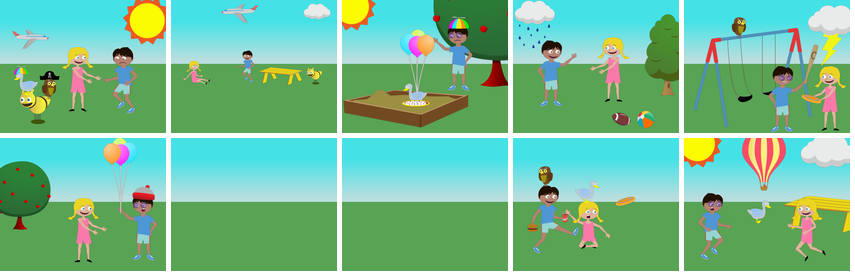
27. Jenny and Mike were happy to see each other even though it was raining.
28. The cat comes to see Mike and Jenny while they are playing by the sandbox.
29. Mike laughs when he sees Jenny coming with a owl on her arm!
30. Jenny and Mike are having so much fun! They are resting after playing baseball.
31. Mike is asking dog and cat where Jenny is. Look she is hiding behind the tree!
32. Jenny's pie got wet. Mike was happy it was ruined since she'd refused to share it with him.
33. Jenny bakes Mike a pie so that he will consider joining silly hats club.
34. Mike and Jenny are happy that the dog has came back!
35. Jenny is playing with a cat in the sandbox.
36. Mike and Jenny sit in the grass and laugh while they watch a cat try to slide down the slide.
37. Mike and Jenny urge the duck to fetch the bucket for them.
38. Mike and Jenny are standing by the fire while a big brown bear tries to scare the two friends.

39. Mike and Jenny are happy to play ball at the park!

40. Mike jumps off the swing and runs to Jenny. Jenny has balloons to share with Mike.
41. Mike was going to throw the ball but Jenny wasn't ready yet.
42. Mike is enjoying a beverage while Jenny plays on a spring rider.
43. Jenny and Mike are both playing dangerously in the park.
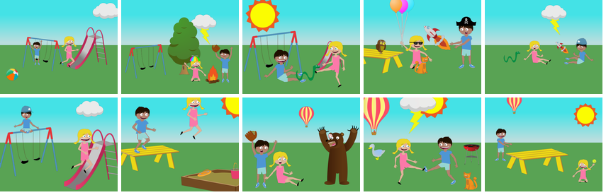
44. Jenny is sitting down in the grass and holding a baseball while Mike is flying a kite and standing next to a cat.
45. "What are you doing Mike!" shouts Jenny as Mike climbs up the slide.
46. Jenny is happy when Mike tells her that her other sandwich is ready.
47. Mike is pretending to be a wizard and make a very big fire. Jenny is scared the fire will get too big.
48. "Look at the baby kitten!" the happy Jenny says to Mike. Mike is surprised at how small the kitten is.
49. Mike and Jenny were surprised to see a rocket in the sky. They chased it so see where it went.
50. Mike and Jenny are playing soccer while a plane flies over them.
51. Mike and his dog went to the park and met a cat.
52. Mike is happily playing on the swing! It is almost time to have some pie!
53. Mike and Jenny try and be friendly with a murderous bear.
54. Mike and Jenny are startled as a snake tries to get into their tent. A helicopter above is there to help.
55. Mike wants to play with the Kite but Jenny holds it up high.
56. Mike and Jenny want to make lunch but an owl gets in the way.
57. Mike and Jenny are both playing soccer with shades on.
58. Mike is laughing so hard at the owl sitting on the soccer ball as it begins to rain.
59. Mike and Jenny are playing soccer. They are using the swing set as an obstacle to kick the ball through.

60. Mike is mad that Jenny threw the ball so high!
61. Mike was getting read to swing the bat but a duck kept getting in his way.
62. Jenny is annoyed that Mike is trying to act cool.
63. Mike is upset because his sand castle got destroyed by Jenny's soccer ball.
64. Jenny and Mike were happy the rain was going away and the big balloon was back.
65. Mike and Jenny have a picnic after Jenny uses magic to tie balloons to a snake.
66. "What is that noise!" shouts Mike as lighting hits the airplane. Jenny jumps up and down telling Mike what just happened!

67. Jenny laughs so hard when she sees the duck sitting on Mikes' head! Mike does not like Jenny thinking it is so funny!
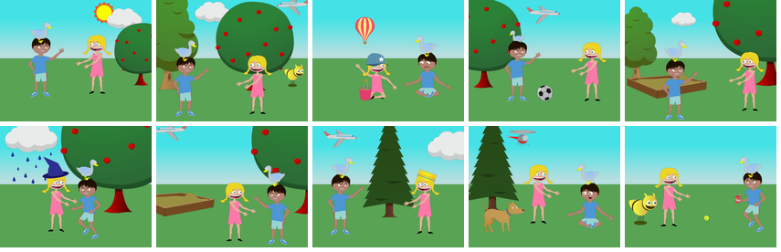
68. Mike is going to go down the slide to get the ball.
69. Jenny is happy to play on the slide while Mike is happy to get his sandwich.
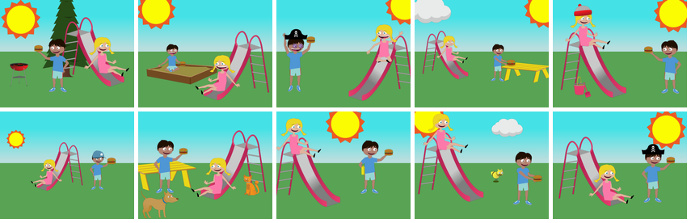
70. It was raining in the park and a duck and a snake were trying to take shelter.

71. Mike and Jenny had a lot of fun playing on the slide.
72. Mike wants the soccer ball and is angry because Jenny wont give it to him.
73. Mike jumps up and down with joy when he sees that the hot dogs are ready to eat!
74. A bear scared Jenny and Mike away from their campsite.
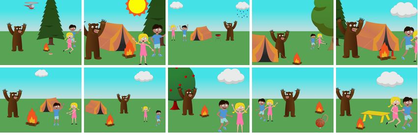
75. Jenny is scared that the cat caught in the tree might get hurt by the storm coming in. She calls for help.
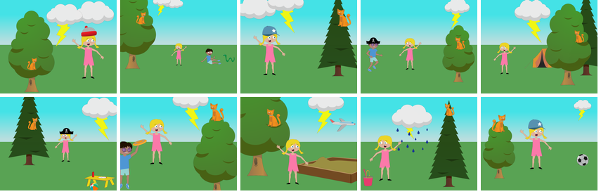
76. Mike is surprised that Jenny is so angry that he does not want to play.
77. Jenny jumps up and down because she is happy that the hot dogs are ready to eat. Mike is telling Jenny not to get to close to the grill.
78. Mike and Jenny observe gravity by watching planes flying kites and throwing balls into the air.
79. Now that they are friends with the bear Mike and Jenny ask him to play.
80. Mike and Jenny play catch in the park under a flying rocket ship and a tree with balloons.
81. While playing at the park Mike is happy to see a rocket speeding through the sky!
82. Mike greets a murderous wizard bear but Jenny is afraid he will zap her with lightning.
83. Mike is a competitive soccer player but Jenny just wants to have a good time.
84. Mike and Jenny are having so much fun playing ball while camping out at the park!
85. Jenny offers mike a hamburger while he tries to coax his dog out of the tree.
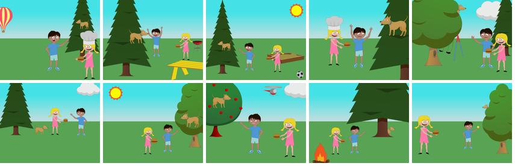
86. Jenny wants to eat now but Mike wants to tell her something funny!
87. Dog is going in the tent when it starts to storm. Dog does like thunder and lightning!
88. Mike and Jenny jump off the picnic table after the wave by to the hot air balloon.
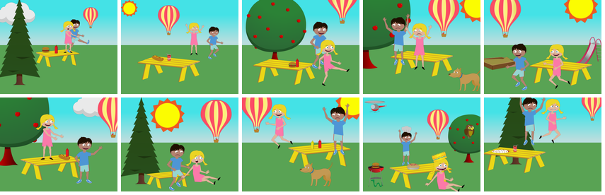
89. Mike tries to build a fire but the rain puts it out.
90. Jenny fell off of the swing in the park while a hot air ballon was overhead.
91. While Mike can't decide between mustard and ketchup a hostile bear sneaks up on him.
92. Mike and Jenny are sad because the silly cat will not get out of the sandbox.
93. Mike is trying to have lunch but his hotdog is not adequately cooked.
94. The rain came back and now there was lightning in the sky too. Jenny's day at the park was ruined.
95. Jenny is angry at the owl for being on the swing set! Mike thinks it is funny!

96. Mike and Jenny are running away from a threatening bear.
97. Jenny is happy to see her hot dog and pizza are ready to eat!
98. Mike and Jenny are angry because it started raining at the park.
99. Jenny is making burgers and greets mike and his dog when they show up.
100. Mike is trying to warn Jenny that there is a bear in the park but she wont listen.
101. Jenny is happy to walk in the park but Mike thinks he hears something that sounds scary!
102. Jenny and Mike are excited because the are going to camp out in the park.
103. Mike is trying to scare away the snake because it is scaring Jenny. His dog helps him.
104. Mike is going to burn Jenny's baseball glove in the campfire which makes Jenny very sad. Jenny starts to cry as Mike holds it over the fire.
105. Jenny tries to have a picnic but Mike just wants to play with his balloons.
106. A bear is holding a coke and a hamburger. Jenny and Mike are kicking the bear.
107. Mike kicked the ball higher than he had ever kicked it before.
108. Jenny gets off the swings because she notices a snake. Mike doesn't see the snake and is running towards the swing set.
109. Jenny is wondering where dog is since the other pets are with her.
110. The airplane is headed right for the storm. The dog and cat wait under the apple tree.
111. Mike is handing a burger to Jenny and the dog jumps to get the burger. Jenny watches with shock from under the apple tree.
112. Mike is kicking a soccer ball in the park next to an apple tree in the sunny park.
113. A storm comes while Mike and Jenny are playing catch.
114. Mike and Jenny are sitting by the campfire when a snake sneaks up on them.
115. Mike is so happy that Jenny remembered his birthday.
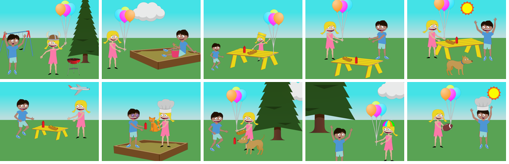
116. Mike and Jenny are surprised to see a green snake while they are at the park flying their kite. Dog thinks the snake looks funny!
117. Mike isn't sure whether or not his dog licked his food.
118. Jenny and Mike were so happy about their campfire they didn't notice the snake going by.
119. Mike and Jenny are trying to wave down a helicopter so that they can be rescued.
120. Mike is enjoying his meal when he sees Jenny come strolling by.
121. Jenny is ready to play tennis but Mike wants to play soccer.
122. Mike is sitting in the park next to a bonfire while a cat wearing a magicians hat sits nearby and stares at him
123. Mike and Jenny found a duck and put a viking hat on it.
124. Mike and Jenny are eating their lunch while sitting under the apple tree. Mike thinks it is funny that Jenny is worried about when they will be able to play!

125. Jenny and Mike are standing in the park next to a yellow picnic table.
126. "I do not want pie!" said Mike when Jenny offered the pie to him.
127. Mike pleads with Jenny who is about to hit a pie on the ground with a bat. An owl watches in a tree.
128. Jenny and Mike cheered when they found their sports equipment.
129. Jenny jumps in the air and tries to make the noisy rocket go away.
130. "Oh no!" shouts Jenny as it begins to rain! Mike is mad because the rain will make the fire go out!
131. Mike and Jenny are happy to have a pizza party at the park!
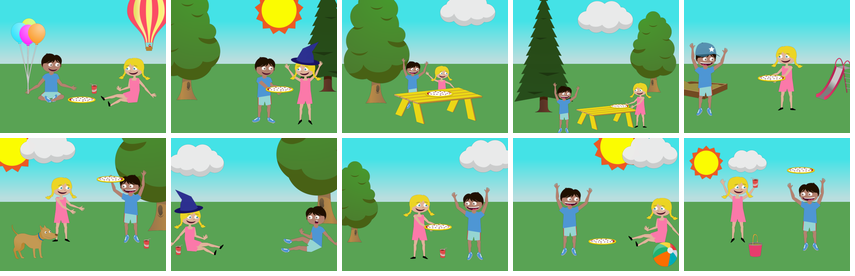
132. Jenny has kicked a football into Mike's pizza! He feels very sad.
133. Jenny tries to show the owl her crown.
134. Mike is upset because there's an angry bear staring at him.
135. Mike and Jenny run away when a bear comes to take their pizza.
136. Jenny is upset and runs away because Mike is so angry at her.
137. Mike and Jenny are playing in the sandbox but Jenny is crying because she's allergic to dogs.
138. Jenny is sad to lose her balloons as she chases them. Mike is mad that she let go of the balloons.
139. Mike and Jenny realize the bear wasn't trying to scare them. He was bringing mustard for the hot dogs.
140. Mike and Jenny are kicking a beach ball towards a tree inhabited by an owl.
141. Mike tries to get Jenny to slide down the slide into the sandbox.
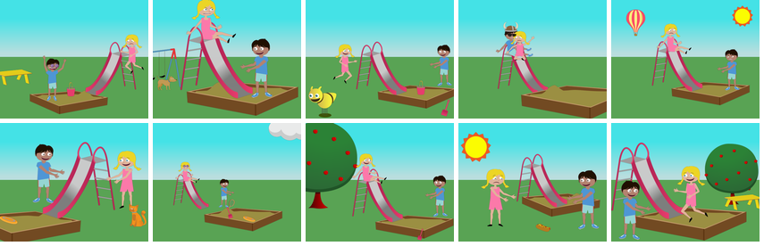
142. Mike is waving from his campsite while his dog steals his burger.
143. Mike kicked the ball so hard Jenny had to stand on the table to catch it.
144. Mike and Jenny are proud of themselves for assembling a tent.
145. Jenny screams when she sees a snake but Mike doesn't hear her because the plane is so loud.
146. Mike goes down the slide and lands too hard on the ground. Jenny runs over to help him.
147. Mike and Jenny are trying to lure a cat to them using cat food and water. The cat looks unamused.
148. Mike tries to shew away the owl as Jenny tells him the owl is okay playing in the sand box!
149. Mike and Jenny are camping in the rain and see an airplane fly over.
150. Mike is chasing Jenny around the picnic table in anger.
151. Mike and Jenny are going to cook hot dogs on a campfire.
152. Mike is worried that the fire is to close to the grill!

153. Mike is going to play baseball on the other side of the slide.
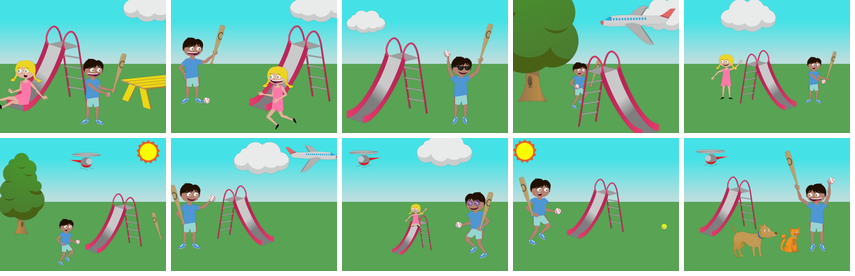
154. Mike and Jenny are happy because they are having a party with a bear.
155. Jenny is sad Mike won't share his burger.
156. Mike bats the ball Jenny is sad that she can not catch it.
157. Mike gets in the sandbox with Jenny and she is startled and almost loses her balloons.
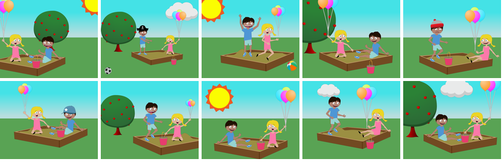
158. Jenny is worried because not only is it storming while she's camping outside but a bear managed to find it's way to her camp.
159. Mike and Jenny examine a football while wearing hats.
160. Mike and Jenny are trying to feed a wild bear a hamburger.
161. Mike and Jenny are enjoying a soda by the apple tree.
162. Mike and Jenny are kicking a soccer ball back and forth near a campfire while a rocket ship launches in the background and a duck watches.
163. Mike and Jenny are running toward the swings in the park.
164. Jenny watches the rocket shoot off and sees the rain start in the distance.
165. Jenny looks scared as Mike holds a tennis racket and angrily runs at a bear that is wearing a hat and holding a basketball.
166. The rain ruined the lunch Mike made. Jenny enjoys watching the rocket.
167. Jenny goes to build a sandcastle while Mike enjoys a hot dog.
168. Mike and Jenny are unhappy that the cat will not stay away!
169. Even though the sun didn't come out Mike and Jenny play soccer.
170. A bear wears a viking hat and has a tennis racket in his hand. He is raising his hands and growling at a dog standing beside a pizza.
171. Jenny has slipped and fallen while playing soccer with Mike in the Park.
172. Mike and Jenny are running for their lives because a bear showed up at the park.
173. Mike offers Jenny a hot dog. She is so hungry she runs to get it.
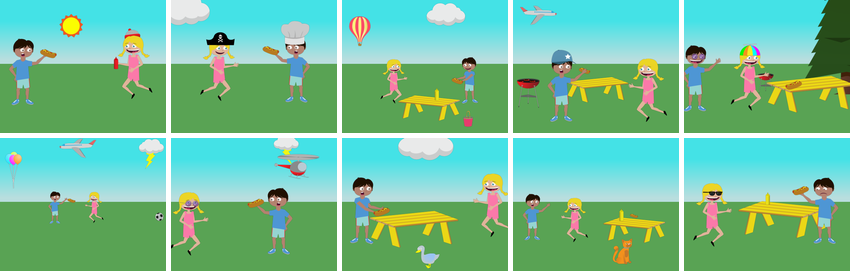
174. Jenny and Mike let a set of ballons go while their dog stands beside them and a plane goes by overhead.
175. Mike is not angry with the animals. They are too close to his pie.
176. Mike and Jenny are happily practicing their soccer kicks. They do not know that it is starting to rain!
177. Mike is telling Jenny a story that she does not like!
178. Jenny and Mike are trying to get away from a snake.
179. Jenny laughs when the little bear tries to scare the cat. Mike is angry because he does not like the bear doing that.
180. Jenny is so surprised to see the huge airplane! Mike is happily eating his lunch!
181. Mike is surprised that Jenny is so mad about not kicking the soccer ball!
182. Jenny is crying because the dog has come face to face with a snake.
183. Mike and Jenny are going camping. They are sitting in the breeze while Jenny wears a propellor hat.
184. The sun came and Mike and Jenny want to play but now there is a snake in the grass.
185. Mike and Jenny are trying to retrieve a hat out of a tree inhabited by an owl as a hot air balloon strolls by.
186. Mike is sad because the rain ruined his play. Jenny is angry because she wanted to see the rest of Mike's play.
187. The cat wants to play baseball with the snake.
188. Jenny had to talk loudly as the plane went by.
189. "Look at the owl in the tree!" shouts Mike and Jenny.
190. Mike has a witch hat on. He is sitting beside an orange cat and an owl stares at him from the base of a tree.
191. Jenny is trying to chase the basketball soccer and the beach ball all at the same time.
192. Mike looks silly with a duck on his head but Jenny doesn't think he is funny.
193. Mike happily waits his turn to go down the slide after Jenny even though it is raining in the park.

194. Mike and Jenny are shocked to see an owl land right next to their campfire.
195. Mike and Jenny are terrified of the bear. They run away and hope he doesn't chase them.
196. Mike and Jenny are playing dress-up on a sunny day.
197. Jenny is mad because Mike will not stand up and play soccer! Mike is mad that Jenny does not want to rest for awhile!

198. Mike and Jenny defy the laws of gravity by using balloons and magic. A storm is coming to ruin their fun.
199. Mike jumped off the slide and tried to catch the plane. Jenny tried to tell him it wouldn't work.
200. Jenny and Mike are surprised to find their picnic basket is missing.